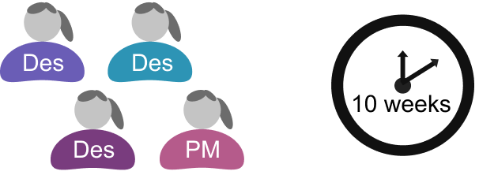

Aerial Burial
Summer 2020, DALI Lab
Aerial Burial's web platform provides drone-based ash scattering services and the personal and customizable memorialization of loved ones. The service facilitates funeral and scattering planning along with virtual obituaries, while comforting a grieving user after the passing of a family member or friend.